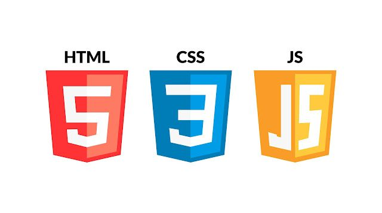

DANIELDEACON, your solutions consultant...
"Follow a purpose,
and reward shall eagerly follow you."
My Story
"Born in 1996 in Belville, Western Cape and raised on the banks of a river in Waterval
Boven, Mpumalanga as the son of a convict or a farmer, depending on who you asked. I was
expected to be the latter but discovered that leaving home at the age of 14 would lead
me on
another path...
From a broken home, to a musician, to writer, to a delinquent, to a leader in banking
and in
financial technology. I've seen it all, I've done it all."
I can offer it all.
My
Expertise

My
Expertise
Education
- Bachelor of Commerce: Information & Technology Management
- National N Diploma: Business Management
- Regulatory Examinations: Representatives
- Higher Certificate: Operations Banking
- National Senior Certificate
Technical Skills

- Develop user interfaces and interactive web components using HTML, CSS, and JavaScript.
- Implement responsive design techniques to ensure optimal viewing experiences across various devices and screen sizes.
- Collaborate with design teams to translate wireframes and mockups into functional web pages.
- Utilise version control systems like Git to manage codebase changes and facilitate collaboration with team members.
- Participate in code reviews and provided feedback on peers' HTML, CSS, and JavaScript implementations to maintain code quality and consistency.
- Contribute to software development projects using Python programming language for backend development.
My
Career

My
Career
Capitec Bank Limited (2018 - present)
- DevOps Engineer (March 2024 - Present):
- Branch Manager (December 2022 - February 2024):
Manage the operational functioning of the branch efficiently and effectively in accordance with set standards and processes Executing the Business and People implementation plans in the branch in order to maintain client service excellence utilising the bank's product offerings and to build a healthy, high-performance team. - Assistant Branch Manager (April 2022 - November 2022)
To support the Branch Manager in the operational functioning of the branch ensuring that daily tasks are assigned and carried out effectively and efficiently according to set standards and in doing so, gain the knowledge, skills and experience required for branch management. - Service Consultant (July 2018 - March 2022):
Works as a salesperson and client services agent, deducing a client's needs, answering their questions, and matching them to financial services they may find helpful. Service Consultants need to be familiar with the bank's offered checking or savings accounts, mortgages, or securities portfolios in order to deduce which would best fit the prospective client.
To operationalise the software development capability through automating and streamlining existing and new capabilities and processes to ensure that software releases are reliable, frequent, secure and scalable. Building Continuous Improvement /Continuous Delivery (CI/CD) pipelines for all capabilities, maintaining and improving existing systems and identifying requirement capabilities for systems.
Bargain Books (2016 - 2018)
- Bookseller / Sales Assistant:
Help locate products for customers, place orders, place holds, process transactions and keep the sales floor organized and well-stocked. They are the face of the company and must uphold company values both in how they dress and how they interact with customers.
Old Mutual Limited (2015 - 2016)
- Financial Adviser:
Assess the financial needs of individuals and help them with decisions on investments (such as stocks and bonds), tax laws, and insurance. Advisors help clients plan for short- and long-term goals, such as meeting education expenses and saving for retirement through investments.